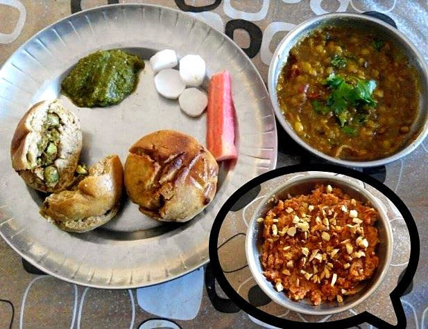

Arhar ki Dal
the plain everyday toor dal of Lucknow homes, finished with a loud ghee, cumin and hing tadka

Contains: milk
Ingredients
Quantities for 4.
- 1 cup (200g), rinsed until the water runs clear Toor Dal
- 3/4 tsp Turmeric
- 1 medium, chopped Tomato
- 2 tbsp Gheethe whole point of the tadka
- 1 tsp Cumin Seeds
- 1/4 tsp Asafoetidause compounded-free hing if you need this gluten-free
- 2, broken in half Dried Red Chilli
- 4 cloves, thinly sliced Garlicoptional
- 1 tsp, julienned Gingeroptional
- 2, slit lengthwise Green Chilli
- 1/2, juiced Lemon
- 2 tbsp, chopped Coriander Leavesoptional
- to taste Salt
- 700ml Water
Cookware
stovetop, pressure cooker
Checked against the ingredient list for ten allergens: milk, egg, fish, crustaceans, tree nuts, peanuts, sesame, mustard, soy and gluten. Brands vary, so read the label on anything new to you.
Before you start
- Soak the dal 20 minutes while you chop. It shaves ten minutes off the cooking and gives a creamier finish.
- Have the tadka ingredients measured out beside the stove. From cumin to chilli the whole thing takes under a minute and burns easily.
Method
- Put the dal, water, turmeric, tomato and half the salt in a pressure cooker. Cook on high for 4 whistles, then let the pressure drop by itself, about 10 minutes.
- Open up and whisk the dal briskly for 20 seconds. It should be loose and pourable, like thin cream. Add hot water if it has tightened.Whisking, not stirring, is what makes home dal smooth.
- Add the slit green chillies and simmer uncovered 5 minutes so the dal takes on their scent.
- Heat the ghee in a small pan until it shimmers. Add the cumin and let it crackle and darken by a shade, about 15 seconds.
- Drop in the hing, then the broken red chillies, then the sliced garlic and ginger. Fry 30-40 seconds, until the garlic is pale gold.Hing goes in first and briefly. It scorches faster than anything else in the pan.
- Pour the tadka straight into the dal and clap the lid on for 2 minutes to trap the aroma.
- Stir in the lemon juice and the rest of the salt off the heat, taste, and scatter the coriander leaves.Lemon after the heat is off. Boiled lemon juice turns bitter.
Storage
Keeps 3 days refrigerated and thickens as it sits. Loosen with hot water when reheating; a fresh half-tadka of ghee and cumin brings it back to life.
Nutrition Good estimate
Medium protein: 12 g a serving, 19% of the calories
| Per serving266 g | Per 100 g | |
|---|---|---|
| Calories | 248 kcal | 94 kcal |
| Protein | 11.8 g | 4 g |
| Carbohydrate | 35.3 g | 13 g |
| of which sugars | 1.1 g | 0 g |
| Fibre | 8.5 g | 3 g |
| Fat | 7.5 g | 3 g |
| of which saturated | 4.2 g | 2 g |
| of which unsaturated | 2.8 g | 1 g |
Ingredients given to taste count as zero, so the real figures run a little higher. Nearest database match used for asafoetida. Estimated from raw ingredients using USDA FoodData Central.
More like this: Healthy Indian recipes · Vegetarian Indian recipes · Gluten-free Indian recipes · Awadhi/Lucknowi recipes
Times, yields, allergens and nutrition are guidance. Use your own judgement on doneness and on storing. More in About.